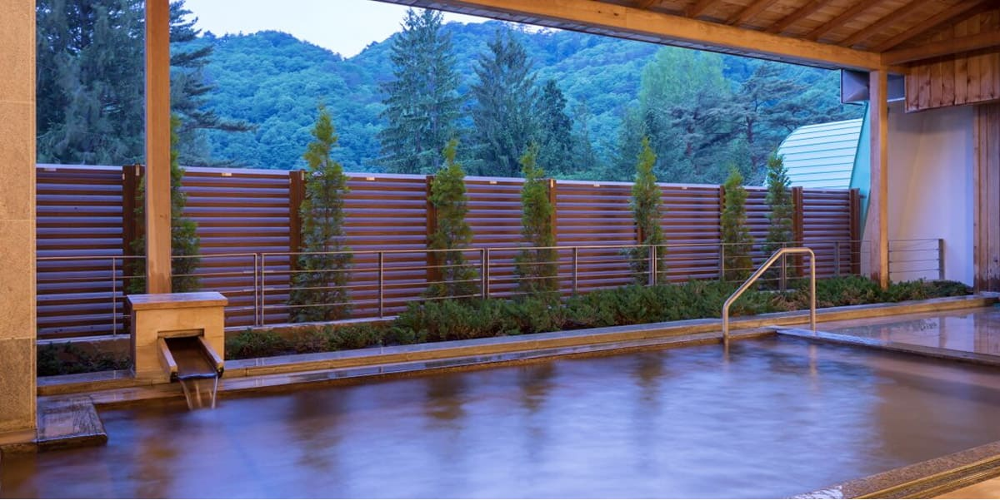
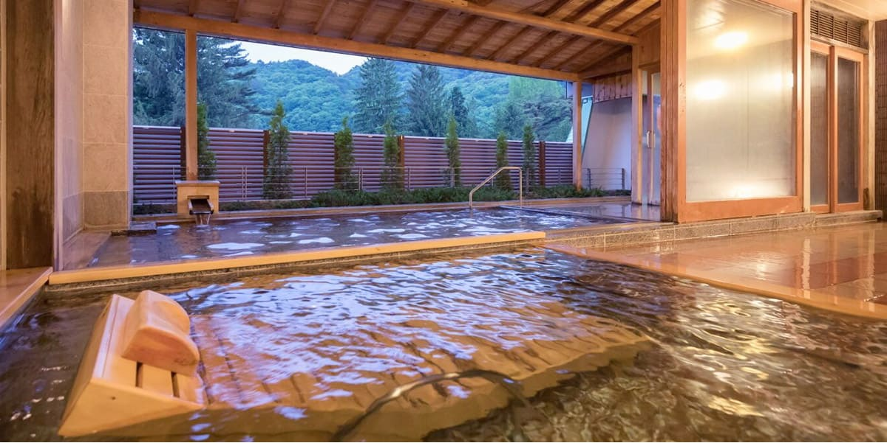

花巻温泉


大正12年（1923）に、台温泉から引湯して開発された温泉。桜並木や赤松林、そして
て宮沢賢治が設計した日時計花壇のあるバラ園など格調の高さと落ち着きのある雰囲気。
北東北の温泉リゾートとして全国にその名を知られている。温泉効能はリウマチ・神経痛
など。美肌効果のある弱アルカリ性の泉質をしている。
観光情報
ジャンル
温泉・宿
所在地
岩手県花巻市湯本１－１２５
電話番号
0198-37-2111
[アクセス経路]
新花巻駅 → 【在来線8分】 花巻駅 → 【バス20分】 花巻温泉バス停 → 【徒歩1分】 花巻温泉
花巻IC → 【車5分】 花巻温泉